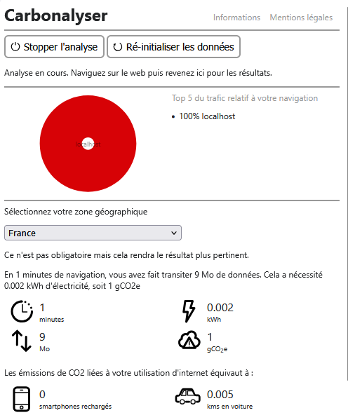
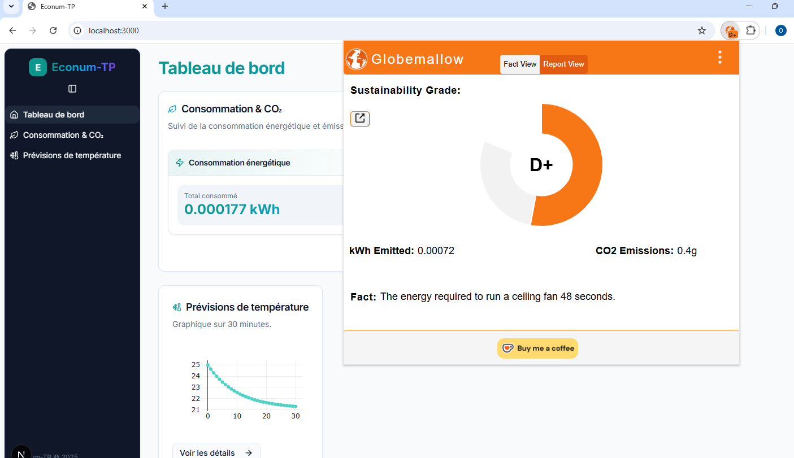
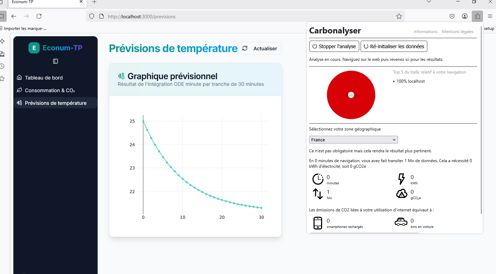

Rapport de projet
Architecture du projet
Backend
-
API dans
Back-end/main.py: Serveur FastAPI-
Solver.py: Calcul des températures -
notebook.ipynb: Tests cython/: Optimisation avec cythonrequirement.txt: Dépendances
Frontend
- Application React et Next.js dans
Frontend/ - Connexion au backend via appels API
Le backend et le frontend sont séparés dans des sous-dossiers du même dépôt.
Performances algorithmiques
| Testcase | CPU | RAM | Énergie | CO2 | Temps d’exécution | Temps de code | Complexité |
|---|---|---|---|---|---|---|---|
| Python | ~0.0217 kWh | ~0.0006 kWh | ~0.02336 kWh | ~0.001 kg | ~217.1s | 45 min | *** |
| Scipy odeint | ~7.33e-07 kWh | ~6.66e-09 kWh | ~7.39e-07 kWh | ~4.14e-08 kg | ~0.009s | 30 min | ** |
| Numba | ~0.0014 kWh | ~4.03e-05 kWh | ~0.0016 kWh | ~8.83e-05 kg | ~14.5s | 5 min | * |
| Cython | ~0.0031 kWh | ~8.55e-05 kWh | ~0.0032 kWh | ~0.0002 kg | ~15.4s | 1h | **** |
Prévision 30x1min vs 1x30min
| Méthode | Énergie | CO2 | Temps |
|---|---|---|---|
| 30x1min | ~0.0217 kWh | ~0.001 kg | ~217.1s |
| 1x30min | ~0.014 kWh | ~0.0008 kg | ~140.3s |
Backend : consommation par utilisateurs
| Charge | Conso (kWh) |
|---|---|
| 10 utilisateurs/min | 0.008933 |
| 100 utilisateurs/min | 0.006447 |
| 1000 utilisateurs/min (cache) | 0.001754 |
Empreinte énergétique du frontend
Carbonalyser

Globemallow

Impact du cache
